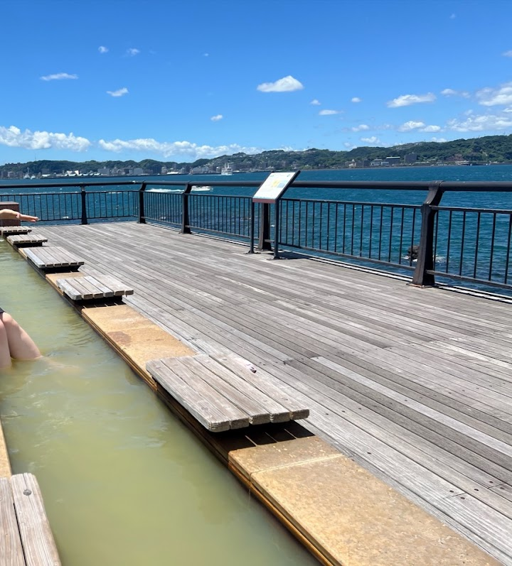
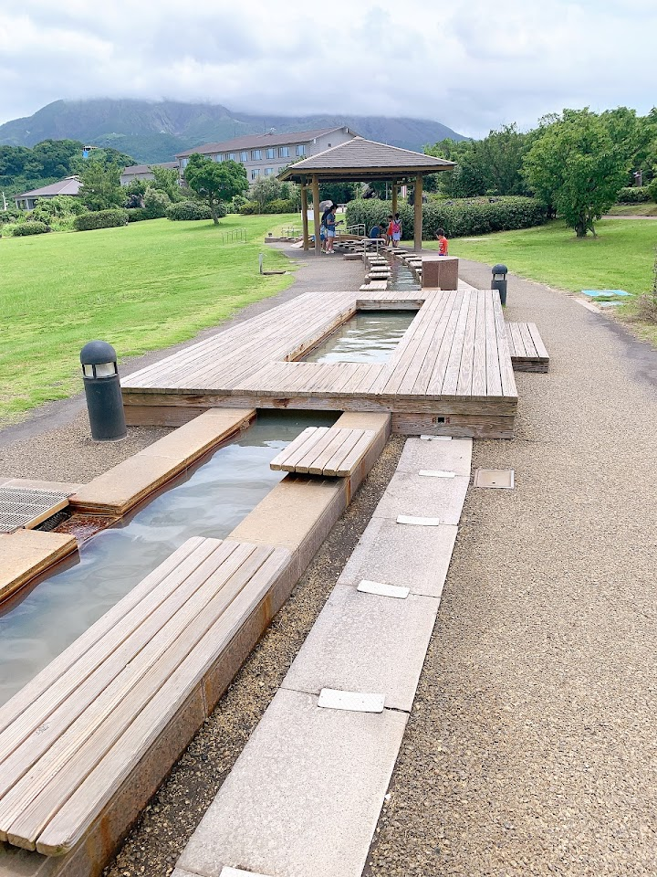
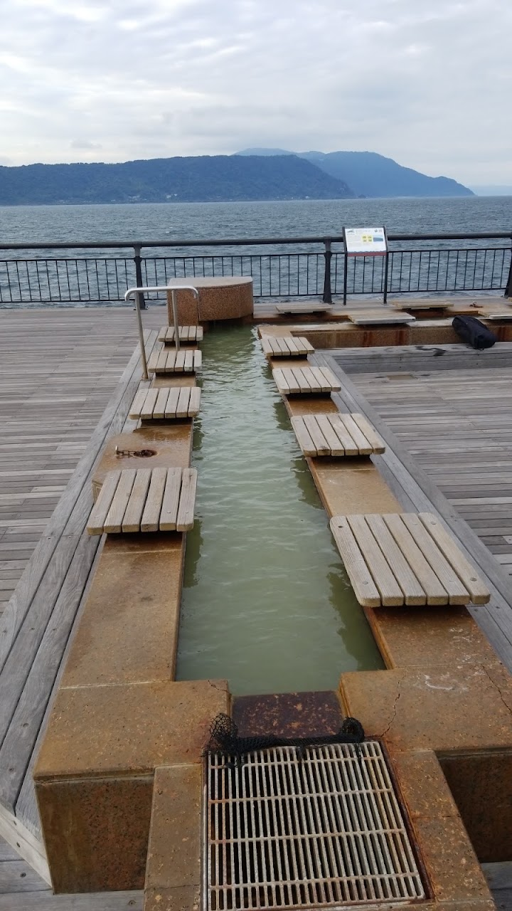
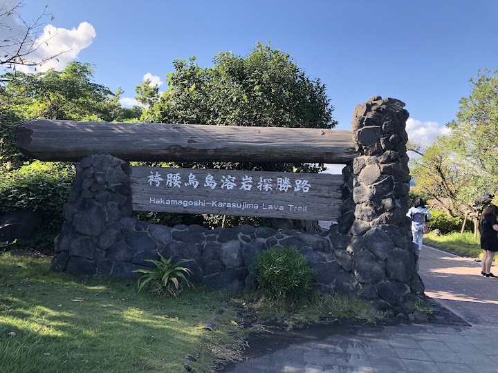
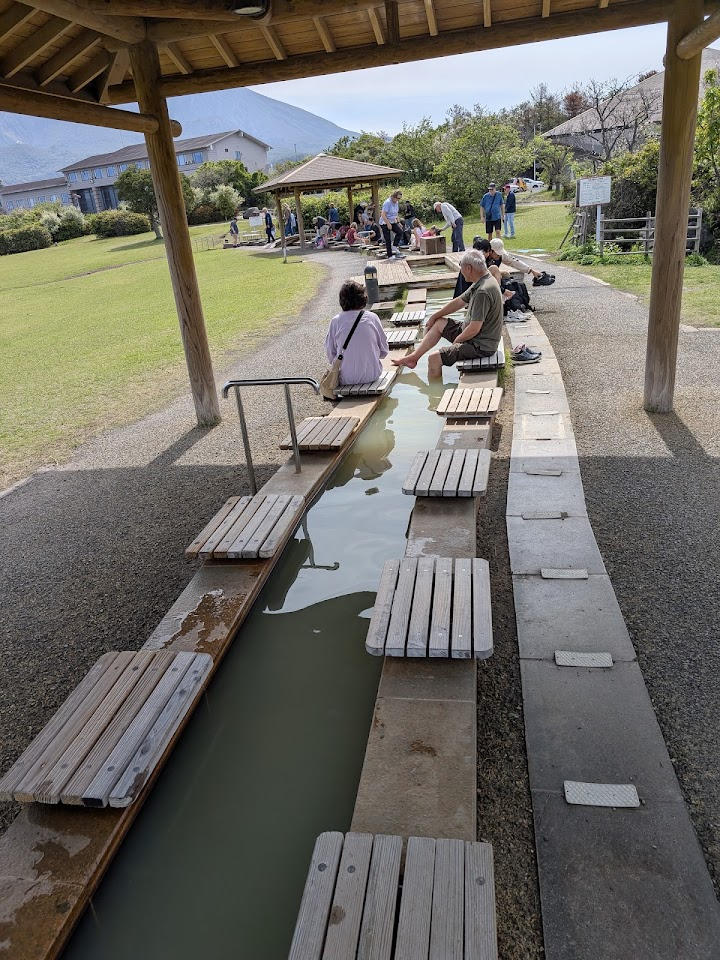

Sakurajima Volcanic Shore Park and Footbath
Tranquil, seafront park offering a public foot bath, hiking trail with lava fields & a fishing pier.
Open in Google Maps (street view, more photos and reviews there)






Visitor tips on finding it and getting there
Scenic Views: Great vantage point for viewing ferries crossing the bay as well as the towering volcano. Lava Nagisa Promenade: A 3-kilometer walking path located near the park that winds through lava fields from the Taisho eruption over 100 years ago.